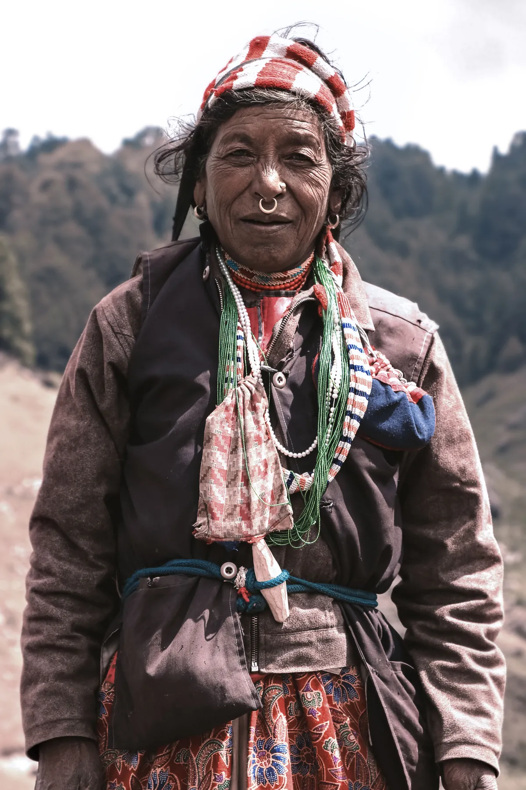
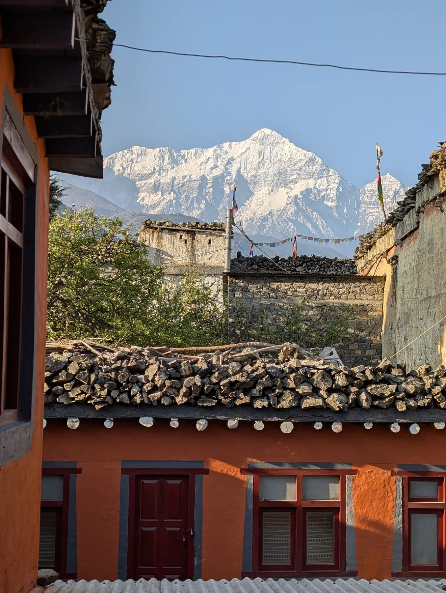

Live Like a Local in Tirthan Valley
Slow down, stay with local families, walk through mountain villages and discover the peaceful rhythm of life in Tirthan.
EXPLORE EXPERIENCE →LIVE LOCAL HIMALAYA
Travel deeper. Meet locals. Experience the Himalayas.
Go beyond the usual tourist trails and discover the Himalayas through its people, traditions, food, villages and landscapes. Choose an experience and discover the story behind the place.
LOCAL STORIES
Every place has a story. Meet the people, discover traditions and experience the Himalayas from a local perspective.
Slow down, stay with local families, walk through mountain villages and discover the peaceful rhythm of life in Tirthan.
EXPLORE EXPERIENCE →Explore remote villages, ancient monasteries and dramatic landscapes while discovering the unique culture of Spiti.
EXPLORE EXPERIENCE →
HIMACHAL PRADESHMeet local families, taste traditional Himalayan food and discover the stories and traditions of Kinnauri communities.
EXPLORE EXPERIENCE →
UTTARAKHANDWalk through quiet mountain villages, meet local people and experience the simple everyday life of the Himalayas.
EXPLORE EXPERIENCE →No experiences in this category yet. Please check back soon.
Helpful details about our guided walks, local village encounters and curated mountain experiences.
Unlike commercial tourist packages, our experiences are led by locals who have lived in these mountain villages for generations. You connect directly with indigenous culture, cook regional meals, and walk trails known only to mountain communities.
Yes, absolutely. Our itineraries are paced comfortably for curious beginners, couples, and solo travellers. We customize daily walking distances and activity levels to match your preferences.
Local hosts, community storytellers, and certified village guides from the respective valleys. Their deep knowledge of folklore, birdlife, flora, and customs brings every step to life.
Yes! Every experience can be tailored to private family trips, small groups of friends, or bespoke solo journeys. Simply reach out via our Plan Your Trip page.
Comfortable walking shoes with good grip, warm layers (evenings in the mountains can get chilly year-round), a reusable water bottle, sun protection, and a modest dress code respectful of village traditions.
YOUR HIMALAYAN STORY
Discover experiences that bring you closer to the people and places of the Himalayas.
PLAN YOUR EXPERIENCE